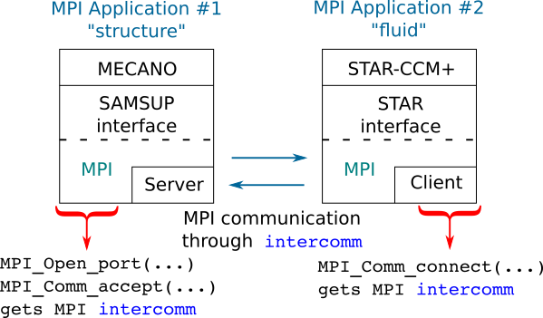

I was working in the design and implementation of a non-invasive solution for coupling the codes Samcef-Mecano and Star-CCM+ for solution Fluid-Structure Interaction (FSI) problems. The basic idea consists in implementing two separate MPI programs. One program which implements the SAMSUP interface and communicates with Samcef-Mecano. The other one implements the Star-CCM+ interface for co-simulation and interacts with the Star-CCM+ solvers. In order to establish the communication between the two programs and facilitate the exchange information, the MPI support for connecting MPI processes belonging to different parallel applications is used. Under this scenario, each program or application can be initiated as respectively specified by the documentations of Samcef and Star-CCM+. When implementing the MPI support for connecting the MPI processes, one of the programs, referred to as the server, will open a port for accepting connections, whilst the other program, referred to as the client, will connect to that opened port. Here, the communication is established between two groups of processes thourgh an inter-communicator. This is a clean solution that is not invasive, it is standardised and, therefore, portable.
Proposed strategy for the implementation of the coupling
Two separate MPI applications, one implementing the SAMSUP interface and the other the co-simulation API of StarCCM+, exchange data using MPI inter-communicators.
